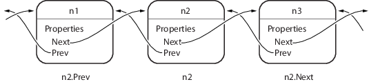
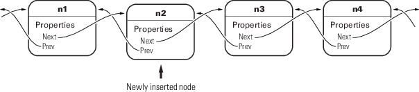

Why Use Object-Oriented Design
Approaches to Writing MATLAB Programs
Creating software applications typically involves designing the application data and implementing operations performed on that data. Procedural programs pass data to functions, which perform the necessary operations on the data. Object-oriented software encapsulates data and operations in objects that interact with each other via the object's interface.
The MATLAB® language enables you to create programs using both procedural and object-oriented techniques and to use objects and ordinary functions together in your programs.
Procedural Program Design
In procedural programming, your design focuses on the steps that must execute to achieve a desired state. Typically, you represent data as individual variables or fields of a structure. You implement operations as functions that take the variables as arguments. Programs usually call a sequence of functions, each one of which is passed data, and then returns modified data. Each function performs an operation or many operations on the data.
Object-Oriented Program Design
The object-oriented program design involves:
Identifying the components of the system or application that you want to build
Analyzing and identifying patterns to determine what components are used repeatedly or share characteristics
Classifying components based on similarities and differences
After performing this analysis, you define classes that describe the objects your application uses.
Classes and Objects
A class describes a set of objects with common characteristics. Objects are specific instances of a class. The values contained in an object's properties are what make an object different from other objects of the same class. The functions defined by the class (called methods) are what implement object behaviors that are common to all objects of a class.
When Should You Create Object-Oriented Programs
You can implement simple programming tasks as simple functions. However, as the magnitude and complexity of your tasks increase, functions become more complex and difficult to manage.
As functions become too large, you can break them into smaller functions and pass data from one to function to another. However, as the number of functions becomes large, designing, and managing the data passed to functions becomes difficult and error prone. At this point, consider moving your MATLAB programming tasks to object-oriented designs.
Understand a Problem in Terms of Its Objects
Thinking in terms of objects is simpler and more natural for some problems. Think of the nouns in your problem statement as the objects to define and the verbs as the operations to perform.
Consider the design of classes to represent money lending institutions (banks, mortgage companies, individual money lenders, and so on). It is difficult to represent the various types of lenders as procedures. However, you can represent each one as an object that performs certain actions and contains certain data. The process of designing the objects involves identifying the characteristics of a lender that are important to your application.
Identify Commonalities. What do all money lenders have in common? All MoneyLender objects can have a loan method and an InterestRate property, for example.
Identify Differences. How does each money lender differ? One can provide loans to businesses while another provides loans only to individuals. Therefore, the loan operation might need to be different for different types of lending institutions. Subclasses of a base MoneyLender class can specialize the subclass versions of the loan method. Each lender can have a different value for its InterestRate property.
Factor out commonalities into a superclass and implement what is specific to each type of lender in the subclass.
Add Only What Is Necessary. These institutions might engage in activities that are not of interest to your application. During the design phase, determine what operations and data an object must contain based on your problem definition.
Objects Manage Internal State
Objects provide several useful features not available from structures and cell arrays. For example, objects can:
Constrain the data values assigned to any given property
Calculate the value of a property only when it is queried
Broadcast notices when any property value is queried or changed
Restrict access to properties and methods
Reducing Redundancy
As the complexity of your program increases, the benefits of an object-oriented design become more apparent. For example, suppose that you implement the following procedure as part of your application:
Check inputs
Perform computation on the first input argument
Transform the result of step 2 based on the second input argument
Check validity of outputs and return values
You can implement this procedure as an ordinary function. But suppose that you use this procedure again somewhere in your application, except that step 2 must perform a different computation. You could copy and paste the first implementation, and then rewrite step 2. Or you could create a function that accepted an option indicating which computation to make, and so on. However, these options lead to more complicated code.
An object-oriented design can factor out the common code into what is called a base class. The base class would define the algorithm used and implement whatever is common to all cases that use this code. Step 2 could be defined syntactically, but not implemented, leaving the specialized implementation to the classes that you then derive from this base class.
Step 1
function checkInputs() % actual implementation end
Step 2
function results = computeOnFirstArg() % specify syntax only end
Step 3
function transformResults() % actual implementation end
Step 4
function out = checkOutputs() % actual implementation end
The code in the base class is not copied or modified. Classes you derive from the base class inherit this code. Inheritance reduces the amount of code to be tested, and isolates your program from changes to the basic procedure.
Defining Consistent Interfaces
The use of a class as the basis for similar, but more specialized classes is a useful technique in object-oriented programming. This class defines a common interface. Incorporating this kind of class into your program design enables you to:
Identify the requirements of a particular objective
Encode requirements into your program as an interface class
Reducing Complexity
Objects reduce complexity by reducing what you must know to use a component or system:
Objects provide an interface that hides implementation details.
Objects enforce rules that control how objects interact.
To illustrate these advantages, consider the implementation of a data structure called a doubly linked list. See Implementing Linked Lists with Classes for the actual implementation.
Here is a diagram of a three-element list:

To add a node to the list, disconnect the existing nodes in the list, insert the new node, and reconnect the nodes appropriately. Here are the basic steps:
First disconnect the nodes:
Unlink
n2.Prevfromn1Unlink
n1.Nextfromn2
Now create the new node, connect it, and renumber the original nodes:
Link
new.Prevton1Link
new.Nextton3(wasn2)Link
n1.Nexttonew(will ben2)Link
n3.Prevtonew(will ben2)

The details of how methods perform these steps are encapsulated in the class design. Each node object contains the functionality to insert itself into or remove itself from the list.
For example, in this class, every node object has an insertAfter method. To add a node to a list, create the node object and then call its insertAfter method:
nnew = NodeConstructor; nnew.insertAfter(n1)
Because the node class defines the code that implements these operations, this code is:
Implemented in an optimal way by the class author
Always up to date with the current version of the class
Properly tested
Can automatically update old-versions of the objects when they are loaded from MAT-files.
The object methods enforce the rules for how the nodes interact. This design removes the responsibility for enforcing rules from the applications that use the objects. It also means that the application is less likely to generate errors in its own implementation of the process.
Fostering Modularity
As you decompose a system into objects (car –> engine –> fuel system –> oxygen sensor), you form modules around natural boundaries. Classes provide three levels of control over code modularity:
Public — Any code can access this particular property or call this method.
Protected — Only this object's methods and methods of objects derived from this object's class can access this property or call this method.
Private — Only the object's own methods can access this property or call this method.
Overloaded Functions and Operators
When you define a class, you can overload existing MATLAB functions to work with your new object. For example, the MATLAB serial port class overloads the fread function to read data from the device connected to the port represented by this object. You can define various operations, such as equality (eq) or addition (plus), for a class you have defined to represent your data.